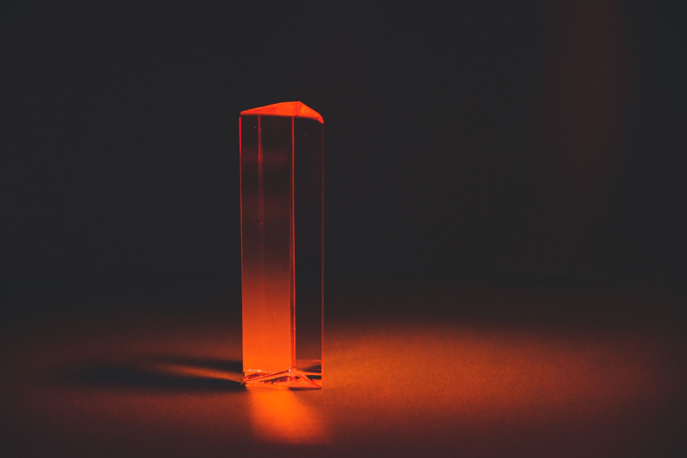

광산 아닌 수출통제가 무기…中, 갈륨·게르마늄 분리 운용 3단계

중국 상무부는 2025년 8월 일본 향 갈륨 수출 허가를 재개했다. 전면 차단 시행 4개월 만이다. 그러나 게르마늄은 동일 시점에도 수출 허가가 사실상 정지 상태를 유지, 동일 법령 체계(2023년 8월 시행 수출통제 고시) 아래 소재별로 허가 가부를 분리 운용하는 패턴이 확인됐다.
이 전략의 핵심은 '광산 통제'가 아니라 '출구 통제'다. 갈륨의 경우 중국이 전 세계 정제 생산의 95% 이상을 점유하고 있으며, 게르마늄은 전 세계 공급의 약 80%가 중국산이다. 수출통제 이전 갈륨 국제 현물가는 kg당 약 220달러였으나 2026년 8월 현재 1,900달러 수준으로 약 8.6배 상승했다.
일본이 갈륨 재개 대상이 된 배경에는 일본 정부의 대중 반도체 장비 수출 규제 완화 협의가 맞물려 있다는 현장 해석이 있다. 반면 한국은 일본과 달리 대중 수출 규제 레버리지가 상대적으로 약해 동등한 협상 지위를 확보하지 못한 채 게르마늄 공백을 단독 감내 중이다. 국내 게르마늄 수입의 중국 의존도는 2022년 기준 약 70%였으며, 통제 이후 조달 경로가 러시아·캐나다산으로 분산되는 과정에서 단가가 3배 이상 상승했다.
기후에너지경제 기획 보도에 따르면 자원 전쟁의 실질 무기는 광산 확보가 아니라 허가 발급 시스템임이 재확인됐다. 중국은 2023년 이후 갈륨·게르마늄·흑연·희토류·안티몬 등 총 6개 품목군에 수출통제를 순차 적용하며 허가 발급 속도와 대상국을 변수로 활용하는 '정밀 수출통제 외교'를 구사하고 있다.
갈륨 재개와 게르마늄 봉쇄의 동시 운용은 중국이 단순 보복이 아니라 국가별·소재별 협상 카드를 분리해 사용하는 2단계 전략으로 전환했음을 의미한다. 이는 WTO 규범 위반 논란을 피하면서도 개별 국가에 맞춤형 압박을 가할 수 있어 장기 지속성이 높다.
한국 입장에서 이 전략은 이중 위험을 의미한다. 첫째, 한국이 협상 카드(대중 수출규제 레버리지)를 미국에 이미 양도한 상태라 독자 협상력이 낮다. 둘째, 중국이 향후 이트륨·비스무트 등 추가 소재에 동일 메커니즘을 적용할 경우 한국은 일본보다 재개 우선순위에서 밀릴 구조적 위험이 있다.
수출통제 시스템이 광산보다 강한 이유는 속도 때문이다. 새 광산 개발에 7~15년이 걸리는 반면 수출 허가 발급 중단은 하루 만에 실행된다. 한국이 고려아연의 갈륨 연 15.5t 생산(2028년 목표)으로 일정 부분을 대체할 수 있어도, 중국이 허가 재개와 가격 덤핑을 동시에 구사하면 국내 대체 공급망의 수익성이 즉각 위협받는다.
일본은 이번 갈륨 재개의 단기 수혜자다. 일본 내 갈륨 최대 수요처인 스미토모전기공업, 도요타합성 등 GaN 전력 반도체 소재 기업들이 조달 정상화 혜택을 받는다. 일본의 갈륨 연간 수입량은 약 50t으로, 4개월 공백에 따른 재고 소진 후 재개 시점의 수입 단가 협상력이 이전 대비 개선됐다.
대체 조달 경로를 먼저 구축한 기업들도 반사이익을 누린다. 캐나다 5N플러스(5N Plus)는 고순도 갈륨 생산 역량을 2023~2025년 사이 연 30t에서 55t으로 확대했으며, 독일 PPM Pure Metals는 EU 전략원자재법(CRMA) 지원 하에 유럽 내 갈륨 정제 라인 증설을 진행 중이다.
한국 파운드리·디스플레이 소재 기업은 게르마늄 봉쇄 장기화의 직격탄을 맞는다. 게르마늄은 적외선 광학 렌즈, 광섬유 프리폼, SiGe(실리콘게르마늄) 트랜지스터 소재로 쓰이며 대체 소재 전환에 최소 2~3년이 소요된다. 국내 게르마늄 수요 기업의 재고 비용 부담은 통제 이전 대비 연간 150억~200억 원 수준으로 추산된다.
갈륨 재개 국면에서 가격 헤징에 실패한 기업들도 손실이 발생한다. 재개 발표 직후 갈륨 현물가가 단기 조정 압력을 받으면서, 높은 가격에 장기 계약을 체결한 수요처는 계약 단가와 시장 단가 간 역전 리스크에 노출된다.
게르마늄 조달 담당자는 지금 당장 대체 소싱 비중을 재검토해야 한다. 현재 러시아·캐나다산 혼합 조달 체계에서 캐나다 Teck Resources의 아연 제련 부산물 게르마늄 공급 계약 가능 여부를 먼저 타진할 것. Teck의 게르마늄 부산물 생산 가능량은 연간 약 10~15t 수준으로 추정된다.
갈륨은 반대로 지금이 계약 협상의 적기다. 일본 향 재개로 단기 가격 조정이 예상되는 구간에서, 고려아연 2028년 양산 개시 전까지의 브리지 물량을 현물 1~2년 단기 계약으로 묶되 가격 상한 조항을 삽입하는 구조가 유리하다.
중국의 소재별 차별 통제는 앞으로 이트륨, 비스무트, 인듐으로 확장될 가능성이 높다. 구매 전략팀은 품목별 중국 의존도를 %로 정량화한 '소재 리스크 매트릭스'를 분기 단위로 갱신하고, 의존도 70% 초과 품목은 3개월치 이상 비축 재고 기준을 사내 정책으로 명문화할 것을 권고한다.
실제 조달 현장에서는 — 중국발 수출 허가 재개 소식이 나온 직후 국내 무역상들이 갈륨 재고를 즉시 현물 시장에 내놓으며 단기 가격 조정이 발생하는 패턴이 반복됐다. 이 구간을 매수 기회로 활용하되, 게르마늄처럼 재개 없이 봉쇄가 장기화하는 품목은 가격이 아닌 '가용 물량 확보' 자체를 우선 목표로 삼아야 한다.
이 포스팅은 쿠팡 파트너스 활동의 일환으로 수수료를 제공받습니다.